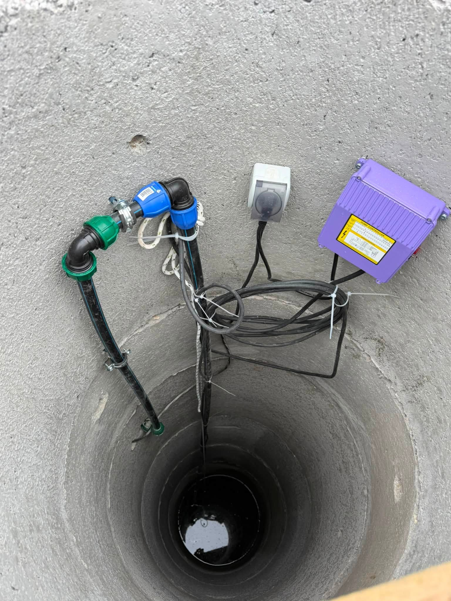

Какво покриват водопроводните трасета
Базата ни е в Костинброд. Работим в София и София област — от оглед и оферта до монтаж и настройка.
Страницата е за изграждане на тръбна мрежа (ново трасе), не за дребни ВИК ремонти. Правим външни и вътрешни трасета към сондаж, резервоар или сградна мрежа, с изпитания преди пускане.
Тук става дума за изграждане на тръбна мрежа от източника до обекта — не за локален ВИК ремонт.
Работим с качествени тръби и фитинги, правим изпитания и връзка към помпи или омекотители при нужда.
- Изграждане на външни и вътрешни водопроводни трасета
- Тръбен път към сондаж, резервоар или сградна мрежа
- Качествени тръби, фитинги и изпитания
- Връзка към помпи и омекотители при нужда
Оферта според метри и терен
Ново водопроводно трасе се оферира според дължина, дълбочина и връзки. Няма смислена единна цена онлайн — след оглед даваме ясен обхват в лв.
Какво не е включено / уточняваме честно: Локалните течове и арматура са към ВИК услугите. Улични магистрални мрежи не са наш обхват.
Изграждане на трасето
Оглед
Маршрут, дължини и връзки към източника.
Изграждане
Тръбен път и фитинги.
Изпитания
Проверка преди експлоатация.
Свързване
Към помпа, омекотител или сградна мрежа.
Къде изграждаме водопроводни трасета
Водопроводни трасета изграждаме за частни обекти в София и София област — от източника до сградата.
Подробности по населени места ↓
От трасетата


Въпроси за водопровод
Какъв е ценовият ориентир за водопроводни трасета?
Ново водопроводно трасе се оферира според дължина, дълбочина и връзки. Няма смислена единна цена онлайн — след оглед даваме ясен обхват в лв.
Каква е разликата с ВИК услуги?
Водопроводните трасета са изграждане на тръбна мрежа. ВИК услугите покриват връзки, ремонти и локални монтажи.
Правите ли трасе към сондаж?
Да — често заедно с помпено оборудване.
Как да заявя?
0886 391 729